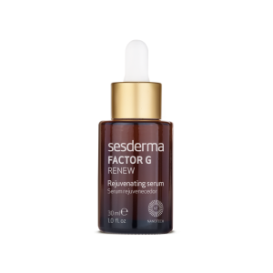

Sesderma Factor G Renew Regenerating Cream është një serum hidratues i cili redukton rrudhat dhe vijat e mimikës. Formula e saj përmban kombinimin e ekstrakteve bimore të cilat nxisin sintezën e kolagjenit dhe elastinës në lëkurë. Lëkura bëhet e qëndrueshme dhe plot elasticitet që në ditët e para të aplikimit. I përshtatshëm për të gjitha llojet e lëkurës edhe ato sensitive. Udhëzime për përdorim Pasi te keni pastruar lëkurën nga papastërtitë dhe make-upi, aplikoni disa pika serum Factor G Reneë dhe shpërndajeni në mënyrë të barabartë në fytyrë, qafë dhe dekolte duke e masazhuar butësisht. Mund ta përdorni si në mëngjes ashtu edhe në mbrëmje.